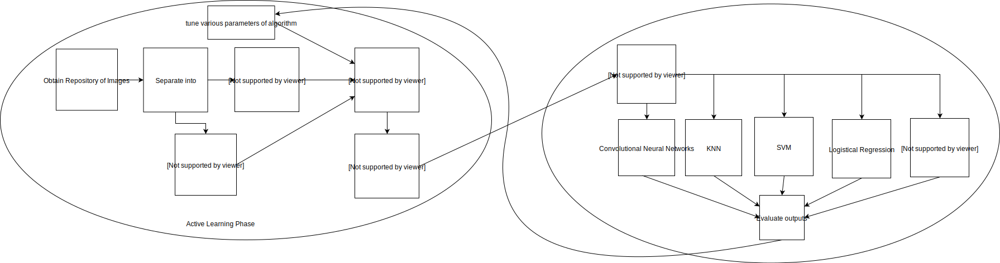

Multi-Class Active Learning and Image Classification
Alhad Daftardar, Anish Visaria, Jason Lee, Naren Dikkala, Timothy Gieseking Fall 2018 CS 4476 Computer Vision: Class Project Georgia Tech
Problem Statement
Background
Machine learning methods have been very successful for image classification, achieving high accuracy rates. However, machine learning methods typically require large numbers of labeled images, which can be time-consuming and expensive to obtain. Unlabeled images on the other hand, can often be collected automatically for a low cost.
Active learning is a category of techniques to increase the accuracy of supervised learning algorithms without increasing the number of labeled examples by utilizing a large number of unlabeled examples. In active learning, the learning algorithm is given a small set set of labeled data and a large set of unlabeled data called the active pool. The active learning algorithm selects a subset of the active pool to be labeled, intended to be the most informative examples. Finally, the supervised learning algorithm is trained on the labeled seed set and selected subset of the active pool.
Project Goals
We plan to implement the Uncertainty Sampling with Diversity Maximization (USDM) active learning algorithm proposed by Yang et al. [2]. USDM is an active learning algorithm intended for multi-class image concept recognition. The first goal of the project is to implement the USDM algorithm. This implementation is novel, as there is no publicly available USDM code. The USDM algorithm takes as input a seed set of labeled images and set of unlabeled images as the active pool and outputs a subset of the active pool which it deems most informative.
The second goal of the project is to analyze the performance of the USDM algorithm for image classification. Various combinations of active learning algorithms and classification algorithms will be tested on image recognition data sets. The results will be compared and analyzed for insights about algorithm performance.

Experimental Setup
We will test the USDM algorithm against the k-center greedy and margin active learning algorithms. Additionally, as baseline comparisons, we will compare against results using only the seed set, the whole active pool, and the seed set together with a uniformly random selection from the active pool as the test set. The classification algorithms used will be k-nearest neighbors (KNN), support vector machine (SVM) with radial basis function kernel, logistic regression with radial basis function kernel, and a convolutional neural network. The data sets used will be Caltech 101 [4], COIL 100 [1], and Tiny ImageNet [2].
For each of the data sets above, we first perform the following operations on each selected data set. Take a 20% stratified sample of the data set as the test set, and use the remaining 80% of the data set as the training candidate set. From the training candidate set, create the seed set by selecting three examples from each class, and use the remaining examples in the training candidate set as the active pool.
For each combination of training set selection algorithm, classification algorithm, and data set above, we will perform an experiment of the following form. Given the labeled seed set and the unlabeled active pool, the training set selection algorithm selects a subset of the active pool. The training set is then created as the union of the seed set and the selected subset of the active pool. The image classification algorithm is trained on the labeled training set. Finally, the trained classification model is tested on the test set and the test accuracy is calculated.
By comparing the test accuracy varying the active learning algorithm but using the same algorithm, we will compare the performance of USDM with other active learning algorithms. Additionally, by comparing the test accuracy between different classifiers using USDM, we will analyze the effectiveness of USDM on these classifiers. We will additionally qualitatively analyze the results for insights about the performance of USDM.
Technical Approach
This project will be written in Python with an API in accordance with the Google active learning repository. We will implement the USDM algorithm in Python according to the description by Yang, et al. [5]. For the other active learning algorithms, we will utilize the implementation in the Google active learning repository [3]. We will use the scikit-learn implementations of the k-nearest neighbors, support vector machine, and kernel logistic regression classifiers. We will use Tensorflow to implement the convolution neural network classifier. For each of these classifiers, we will write Python scripts for automated parameter selection.
Works Cited
[1] "Columbia Object Image Library (COIL-100),"
S. A. Nene, S. K. Nayar and H. Murase,
Technical Report CUCS-006-96, February 1996.
[2] Deng, J., Dong, W., Socher, R., Li, L.-J., Li, K., and
Fei-Fei, L. (2009). ImageNet: a large-scale hierarchical
image database. In CVPR
[3] Google, “Active Learning Playground,” Github, 2014. https://github.com/google/active-learning
[4] L. Fei-Fei, R. Fergus and P. Perona. One-Shot learning of object
categories. IEEE Trans. Pattern Recognition and Machine Intelligence. In
press.
[5] Y. Yang, Z. Ma, F. Nie, X. Chang, and A. G. Hauptmann, “Multi-Class Active Learning by Uncertainty Sampling with Diversity Maximization,” International Journal of Computer Vision, vol. 113, no. 2, pp. 113–127, 2014.